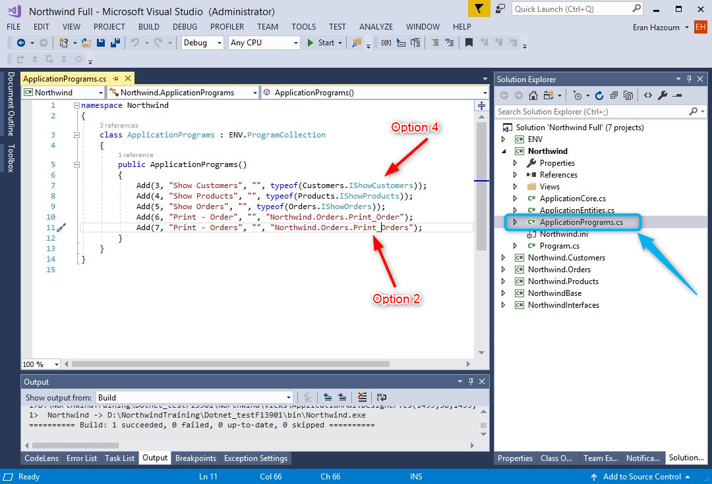
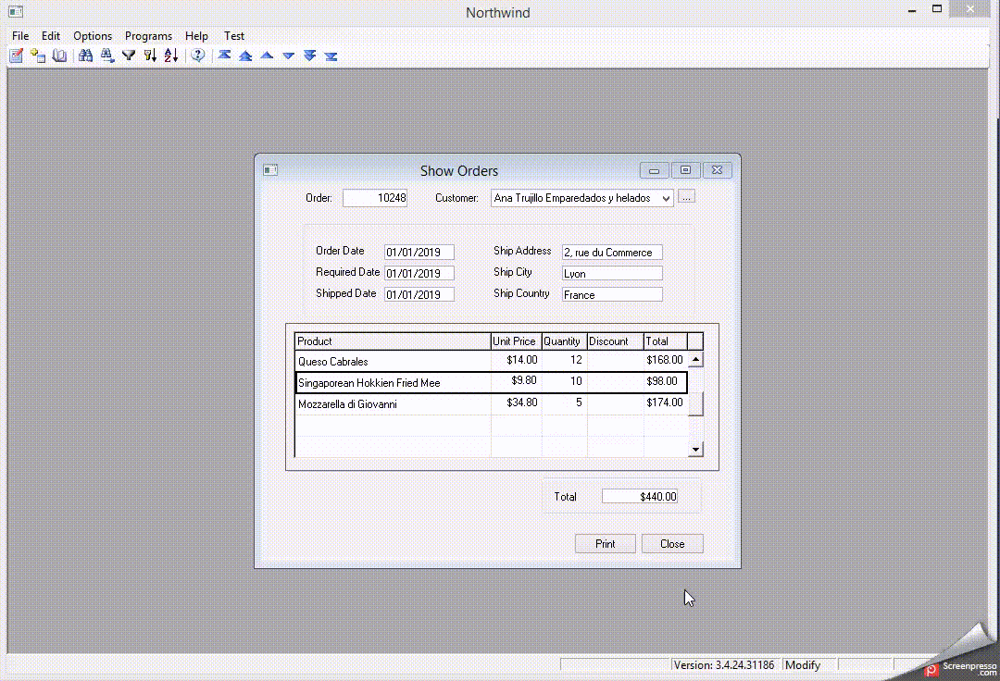

How to Find my Controllers
Here are some techniques on how to find your controllers (programs) easily:
Use the (Shift + F12) keyboard shortcut while running the application to pause directly into the relevant code.
See Using Debug Information in VS
Use the (Ctrl + ,) keyboard shortcut, to open Visual Studio's "goto all dialog". (in vs 2015 it was Ctrl + T)

While running the application use the Controller List developer tools (Shift + F3) to locate the program, right click on the eatery and "Copy Code Path", then use (Ctrl + T) keyboard shortcut to navigate to the class.

see: Finding a Controller Using The Developer Tools And Find Type
Right click on any class and choose
Goto Definitionto go to it's code. (F12). If it's aninterfaceyou can chooseGoto Implementationto go to the actual controller's code.

In the entry point project, there is a class called
ApplicationProgramsthat lists all programs with their number and class info.
Use one of the previous options to go the code :
previous option 2 : if the name of the class appears as text.
previous option 4 :Goto Implementation.

If you get an error report from your users with the call stack, use the stack trace explorer visual studio extension to go directly from it to your code.
Once you break into the code, use the Visual Studio's
CallStackwindow to browse through the running controllers and double click any line to go to it's code. you can find theCallStackwindow the "Debug\Windows\CallStack" menu

Some more navigation related articles
Goto code from the designer: Going To An Expression From The Designer
Working with the small and fast standard solution: Using The Standard Solution
We hope you'll find this useful
Help us improve, Edit this page on GitHub
or email us at info@fireflymigration.com